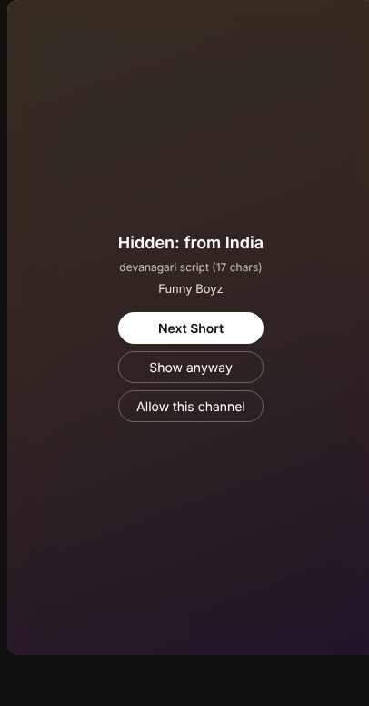
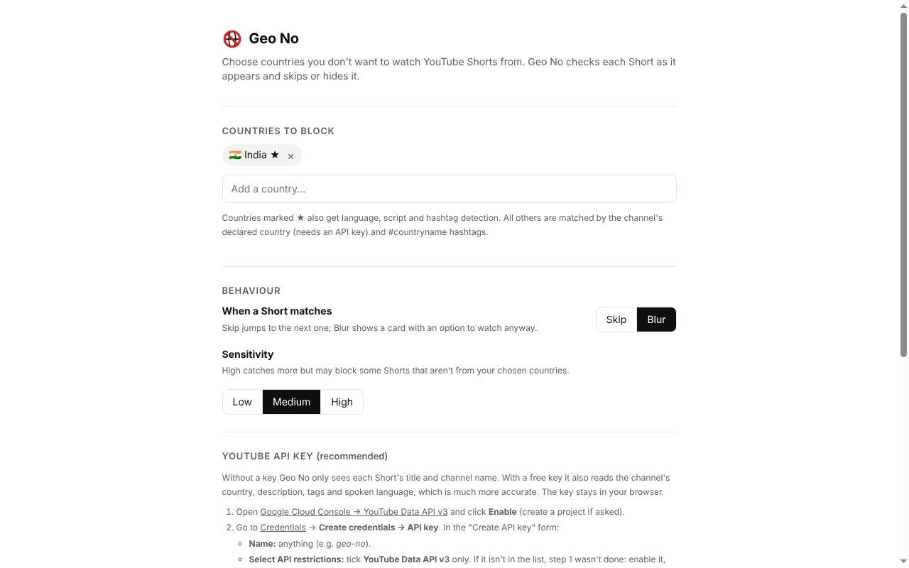

Geo No is a free browser extension that skips or hides Shorts from the countries you choose. Scroll your feed without content you didn't ask for.
Chrome · Edge · Brave · Arc · Open source (MIT) · No account, no tracking

YouTube doesn't label videos with a country, and every Short comes from the same servers, so a normal website blocker can't help. Geo No checks each Short as it appears.
Choose any of 240+ countries and territories. Many people start with India, Pakistan or Bangladesh.
Channel country, writing script, spoken language, Hinglish words and hashtags such as #mumbai or #desi.
Matching Shorts are skipped automatically, or blurred with "Show anyway" and "Allow this channel".
Clues are combined into a confidence score. You choose how strict it is with Low, Medium or High sensitivity.
| Signal | Example | Strength |
|---|---|---|
| Channel's declared country | country: IN | Decisive |
| Writing script | Devanagari, Telugu, Tamil, Bengali, Thai, Hangul | Strong |
| Spoken language | Hindi, Tamil, Telugu, Marathi, Korean, Japanese | Strong |
| Romanised Hindi ("Hinglish") | bhai, yaar, kya, nahi | Medium |
| Hashtags and places | #mumbai #desi #bollywood #ipl | Medium |
geo-no-extension.zip from the latest release and unzip it.chrome://extensions and turn on Developer mode.extension folder.A one-click Chrome Web Store version is on the way.

YouTube has no built-in country filter. Install Geo No, choose the countries you don't want to see, and it skips or blurs matching Shorts as you scroll.
Yes. That's what Geo No was first built for. It detects Indian Shorts from the channel's country, Indian scripts (Devanagari, Tamil, Telugu, Gujarati and more), the spoken language, Hinglish words and hashtags.
With a free YouTube API key, very. Without one, it only sees titles and channel names, so creators who write in English and don't state a country can slip through. If something is blocked by mistake, click "Allow this channel".
No. There's no server and no account. Settings stay in your browser, and the only requests go to YouTube and Google's YouTube Data API. Read the privacy policy.
Not yet. It works on youtube.com in Chrome, Edge, Brave and other Chromium browsers. Instagram Reels and an Android app are on the roadmap.